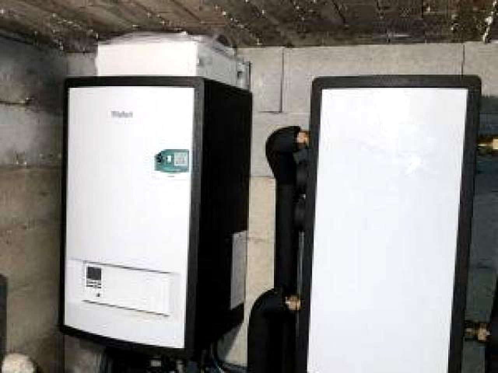
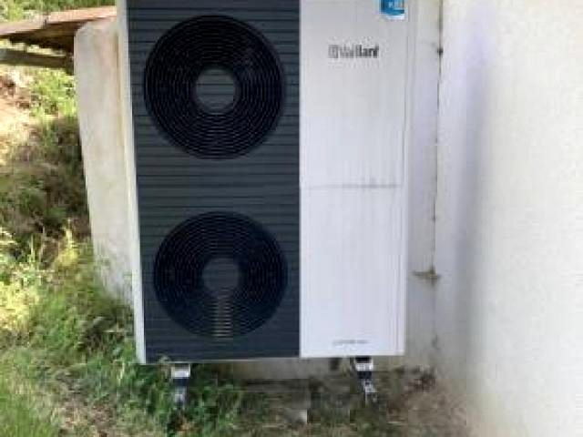

Réparation d'une fuite sur le réseau de chauffage d'une pompe à chaleur air-eau
Fuite d'usure sur la tuyauterie ancienne des radiateurs, en aval d'une installation Vaillant posée par nos soins.
L'installation en place
Notre société de chauffage avait réalisé un chantier quelques années auparavant chez ce client particulier d'Auriol, en posant une pompe à chaleur air-eau de marque Vaillant avec module. L'appareil dessert le plancher chauffant ainsi que l'ensemble du circuit de radiateurs du logement.
Cette installation permettait au client de bénéficier d'un système de chauffage performant et économe en énergie.
La fuite constatée
Le client a rencontré un problème avec la tuyauterie ancienne de ses radiateurs, qui a subi une fuite d'usure. Il a immédiatement fait appel à notre équipe de maintenance AJJY Services pour la réparer.
La réparation
Jean Joannot et Alexandre Joannot, nos deux techniciens experts, se sont rendus sur place rapidement pour évaluer la situation.
Après avoir analysé les tuyaux, ils ont décidé de réduire la longueur du tuyau ancien pour le remplacer par un tuyau neuf en électrozingué, avec un raccord adaptable. Cette solution a permis une réparation rapide et efficace.


Fiche technique
| Commune | Auriol, Bouches-du-Rhône |
| Nature | Réparation de fuite |
| Équipement | Pompe à chaleur air-eau Vaillant avec module |
| Émetteurs | Plancher chauffant et circuit de radiateurs |
| Intervenants | Jean Joannot et Alexandre Joannot |
| Fournitures | Tuyau électrozingué, raccord adaptable |
Vous rencontrez une situation comparable ? Décrivez-nous le problème au 04 84 89 15 86 ou par le formulaire. L'estimation est gratuite et sans engagement.
Autre chantier détaillé

Un technicien vous répond.
04 84 89 15 86Du lundi au vendredi, 8h à 18h non-stop
Second numéro : 04 91 09 55 80
8 ZAC de la Haute Bedoule
13240 Septèmes-les-Vallons
Demander un devis
Gratuit et sans engagement. Réponse dans les meilleurs délais.
Demande enregistrée
Nous vous recontactons dans les meilleurs délais. Pour une panne en cours, appelez le 04 84 89 15 86.